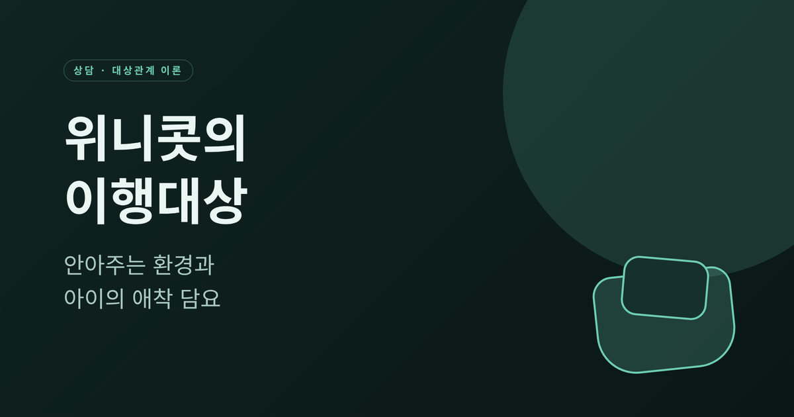
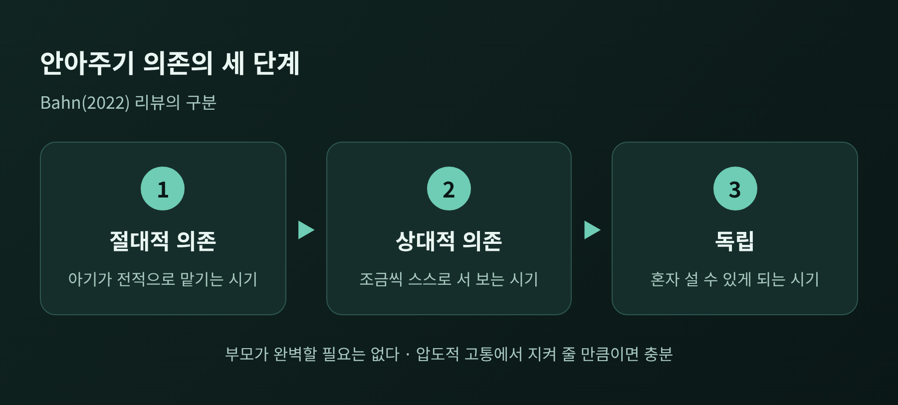
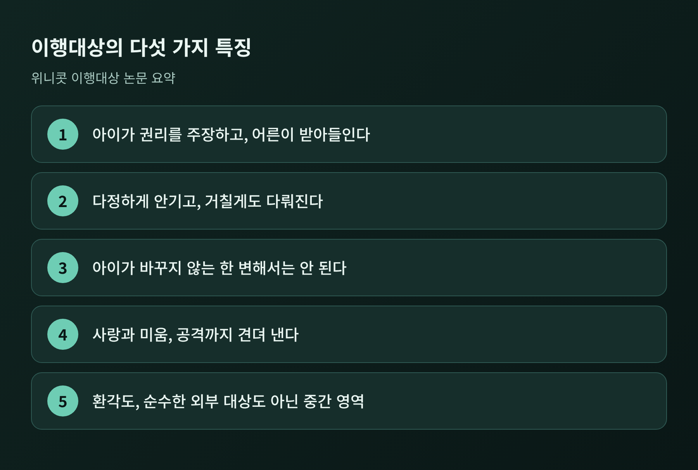
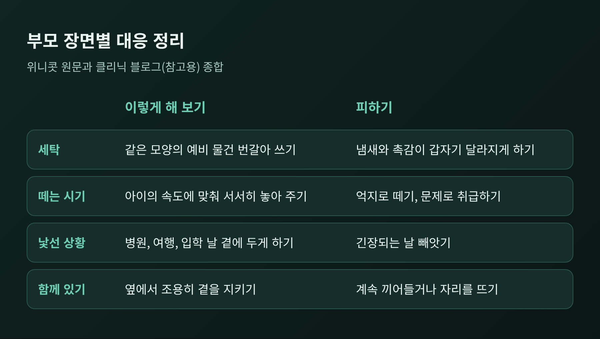
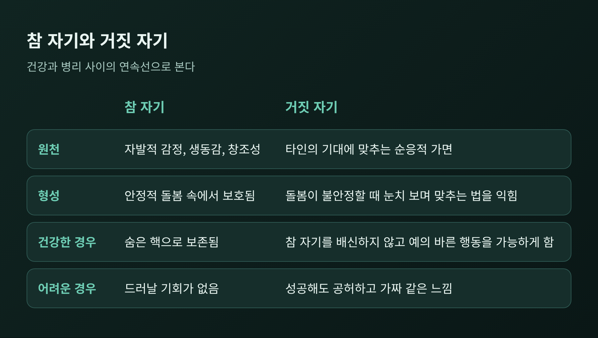
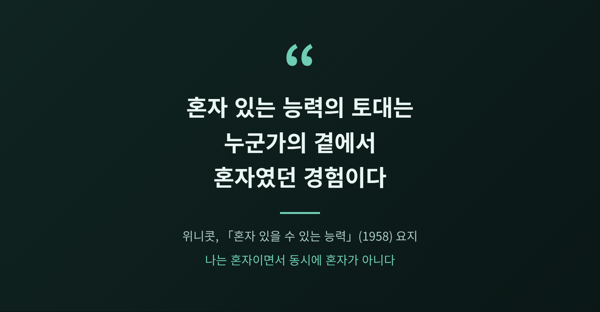

오늘은 위니콧의 이행대상과 안아주는 환경에 대해 이야기해 보려 합니다.
아이의 낡은 담요나 인형은 단순한 장난감이 아니라, 엄마와 떨어지는 연습을 돕는 첫 번째 소유물로 설명됩니다.
다만 이는 하나의 이론적 관점이라는 점도 함께 짚어 보겠습니다.
세 줄 요약
도널드 위니콧(1896~1971)은 영국의 소아과 의사였습니다.
약 40년간 아동병원에서 일하며 영아와 엄마를 가까이에서 관찰했습니다.
이후 정신분석가가 되었고, 영국 정신분석학회 회장을 두 차례 지냈습니다.
흥미로운 점은 그가 전문가에게만 말하지 않았다는 것입니다.
1943년부터 BBC 라디오에서 육아 강연을 60회 넘게 했습니다.
그래서 그의 개념은 어려운 학술어보다 일상의 장면에 가깝습니다.
위니콧이 말한 안아주기(holding)는 아기를 팔에 안는 행위만을 가리키지 않습니다.
그의 표현으로는 영아의 발달 중인 자기를 보호하는 환경 전체의 제공입니다.
안고, 씻기고, 먹이는 엄마의 주의 깊은 돌봄이 그 출발점입니다.
이 돌봄을 통해 아기는 두 가지를 얻는다고 설명됩니다.
엄마가 어떤 존재인지에 대한 첫 감각, 그리고 몸이 안전하게 살 수 있는 곳이라는 감각입니다.
이 개념은 이후 가족과 학교, 상담실로도 확장되었습니다.

한 연구 리뷰는 안아주기에 의존하는 시기를 절대적 의존, 상대적 의존, 독립의 세 단계로 나눕니다.
아기가 전적으로 맡기는 시기에서 조금씩 스스로 서는 시기로 옮겨 간다는 뜻입니다.
이때 '충분히 좋은' 돌봄이면 족하다는 것이 위니콧의 입장입니다.
부모가 완벽할 필요는 없고, 아이를 압도하는 고통에서 지켜 줄 만큼만 가까이 반응하면 된다는 이야기입니다.
이행대상은 위니콧이 1950년대 초 논문에서 제안한 개념입니다.
그는 이를 아이에게 진정으로 속하는 첫 번째 '나 아닌(not-me)' 소유물이라고 불렀습니다.
대개 담요나 곰인형이지만, 멜로디나 특정한 단어가 그 역할을 하기도 합니다.
왜 하필 물건일까요.
아기는 처음에 엄마와 자신을 하나처럼 경험합니다.
엄마가 곧바로 세상을 가져다주면, 아기는 자기가 원하는 것을 스스로 만들어 낸다고 느낍니다.
위니콧은 이를 주관적 전능감이라 불렀습니다.
그러다 엄마가 분리된 존재임을 알게 됩니다.
좌절과 불안이 따라오지만, 이 과정은 결국 건설적이라고 그는 보았습니다.
이행대상은 바로 이 틈에서 쓰입니다.
엄마가 없는 밤에도 엄마 노릇의 일부를 대신해 주기 때문입니다.
위니콧은 이행대상에 몇 가지 특징이 있다고 정리했습니다.

특히 눈여겨볼 대목은 세 가지입니다.
첫째, 아이가 바꾸지 않는 한 변해서는 안 됩니다.
둘째, 사랑과 미움, 거친 공격까지 견뎌 내야 합니다.
셋째, 그 대상은 주관과 객관, 어느 쪽에도 온전히 속하지 않는 중간 영역에 있습니다.
그래서 위니콧은 어른들이 아이에게 "이걸 네가 만들었니, 밖에서 온 거니?"라고 묻지 않기로 암묵적으로 합의한다고 적었습니다.
정답을 가리지 않아도 되는 영역이라는 뜻입니다.
이론을 일상으로 옮기면 몇 가지 장면이 떠오릅니다.
첫째는 세탁입니다.
위니콧은 부모가 대상이 더러워지고 냄새가 나도록 두는 경우가 많다고 적었습니다.
씻으면 아이 경험의 연속성이 끊겨 그 의미가 사라질 수 있다는 이유였습니다.
한 정신분석 기관의 블로그는 이를 받아 같은 모양의 예비 물건을 일찍부터 번갈아 쓰게 하라고 권합니다.
다만 이 블로그는 클리닉이 쓴 글이어서 참고 정도로만 보시길 권합니다.
둘째는 떼는 시기입니다.
위니콧의 원문은 포기 나이를 정하지 않았습니다.
같은 블로그는 대체로 두 살에서 다섯 살 사이에 놓아 준다고 하지만, 고정된 나이는 없다고 덧붙입니다.
억지로 떼거나 문제로 취급하는 일은 피하라는 것이 공통된 조언입니다.
셋째는 낯선 상황입니다.
병원 방문, 여행, 어린이집 입학처럼 긴장되는 날에는 물건을 곁에 두게 하는 편이 좋겠다는 이야기가 있습니다.

위니콧에 따르면 이행대상은 억압되거나 애도되지 않습니다.
시간이 흐르며 의미를 서서히 잃고, 관심이 놀이와 문화 같은 더 넓은 영역으로 퍼져 나갑니다.
잃어버린 것이 아니라 역할을 마친 것입니다.
안아주는 환경이 흔들리면 어떻게 될까요.
위니콧은 이를 참 자기와 거짓 자기로 설명했습니다.
참 자기는 자발적인 감정과 생동감, 창조성의 원천입니다.
거짓 자기는 타인의 기대에 맞추는 순응적인 가면입니다.
돌봄이 불안정할 때 아이는 눈치를 살피고 맞추는 법을 익히며, 그렇게 참 자기를 보호한다고 합니다.

여기서 오해하기 쉬운 점이 있습니다.
거짓 자기가 곧 나쁜 것은 아닙니다.
위니콧은 이를 건강함과 병리 사이의 연속선으로 보았습니다.
건강한 경우에는 참 자기를 배신하지 않으면서 예의 바른 사회적 행동을 가능하게 합니다.
문제는 거짓 자기가 전부가 될 때입니다.
겉으로는 성공해 보여도 속이 비었거나 가짜 같다는 느낌이 남을 수 있습니다.
아이의 장면으로 옮기면 이렇습니다.
늘 어른이 원하는 대답만 하고, 떼를 쓰지 않으며, 갖고 싶은 것이 무엇인지 말하지 않는 아이를 떠올려 보십시오.
얌전하다는 칭찬이 쏟아질 수 있습니다.
그러나 그 얌전함이 안전해서가 아니라 눈치에서 나온 것인지는 따로 살펴볼 만합니다.
위니콧의 1958년 논문에서 가장 널리 인용되는 문장은 이렇습니다.
혼자 있는 능력의 토대는 엄마가 곁에 있는 상태에서 혼자 있었던 경험이라는 것입니다.

혼자 있는 힘이 홀로 버틴 시간이 아니라 함께 있던 시간에서 나온다는 역설입니다.
엄마가 지켜보되 간섭하지 않을 때, 아이는 장난감을 만지작거리고 멍하니 있을 수 있습니다.
위니콧은 이 상태를 자아-관계성이라 부르며 우정을 이루는 재료라고 했습니다.
시간이 지나면 아이는 그 곁에 있어 주던 존재를 내면에 지니게 됩니다.
그래서 엄마가 방을 나가도 사라지는 느낌 없이 "나는 혼자이면서 동시에 혼자가 아니다"라고 느낄 수 있게 됩니다.
실생활에서 보면 이런 장면입니다.
아이가 블록에 몰두해 있을 때 부모가 옆에서 조용히 책을 읽는 시간이 있습니다.
"뭐 하니, 이렇게 해 봐"라고 끼어들지 않고, 그렇다고 자리를 뜨지도 않습니다.
그저 믿을 만한 곁을 내어 주는 일입니다.
이 능력은 고정된 성격이 아니라 경험으로 자란다는 점이 중요합니다.
한 에세이는 위니콧이 '엄마'가 아니라 '누군가'라고 썼다는 점을 짚습니다.
곁을 지키는 사람이 꼭 친모일 필요는 없다는 해석의 여지가 있다는 뜻입니다.
여기까지가 이론의 내용이라면, 이제 한계를 말씀드릴 차례입니다.
첫째, 실증 근거가 충분하지 않습니다.
이행대상 이론을 개관한 한 논문은 여러 이론을 현재의 경험적 증거와 견주어 평가했으나, 제가 확인한 것은 초록뿐입니다.
안아주는 환경을 다룬 최근 리뷰도 자체 데이터가 없는 개념 정리이며, 임상 적용의 효과 근거는 없다고 밝힙니다.
둘째, 문화에 따라 편차가 큽니다.
1970년대 연구에 따르면 담요 같은 물건에 애착하는 아이는 미국이 약 50%, 한국이 약 20%였습니다.
이탈리아에서는 도시 아동이 약 30%, 농촌 아동이 약 5%였습니다.
아이가 하루 대부분을 엄마와 보내는 환경에서는 사물 애착이 덜 흔하다는 견해도 있습니다.
물건이 없는 아이가 문제라는 근거는 확인되지 않습니다.
루틴이나 노래, 양육자의 존재에서 안정을 얻는 아이도 정상으로 봅니다.
다만 이 수치들은 위키 문서를 거친 2차 인용이고, 반세기 전 자료라 지금의 한국 아이에게 그대로 적용하기는 어렵습니다.
셋째, 이론 자체에 대한 비판이 있습니다.
이상화된 어머니상, 아동기 놀이의 지나친 낭만화, 그리고 참 자기 이론이 위니콧 자신의 유년기 경험을 반영했을 수 있다는 해석이 제기됩니다.
돌봄이 가능해지는 사회적 조건까지는 다루지 않았다는 지적도 있습니다.
혼자 아이를 돌보는 부모가 곁을 내어 주기 어려운 것은 부모의 부족함이 아니라 조건의 문제일 수 있습니다.
긍정적인 연구도 있습니다.
브라질의 한 연구에서는 이행대상을 쓰는 아이가 더 쉽게 진정하고 잠들었습니다.
또 다른 연구들은 안전 담요가 새로운 상황에 적응하는 데 도움이 될 수 있다고 보고했습니다.
그러나 이는 이론의 일부를 뒷받침할 뿐, 위니콧의 전체 구도를 입증하지는 않습니다.
정리하면 이렇습니다.
위니콧의 이론은 아이의 낡은 담요를 달리 보게 하는 하나의 렌즈입니다.
정답은 아니지만, 아이가 무엇에 기대어 세상으로 나아가는지 살피게 해 줍니다.
아이가 혼자 설 수 있는 힘은, 곁에 누군가 있었던 시간에서 자랍니다.
끝으로 한 가지만 덧붙이겠습니다.
이 글은 일반적인 정보이며 개별 아이나 가정의 상황을 진단하지 않습니다.
애착 물건에 대한 의존이 지속적이고 강한 불안과 이어지거나, 분리 때의 고통이 시간이 지나도 가라앉지 않는다면 혼자 고민하지 마시고 아동·청소년 전문 상담이나 정신건강의학과 전문가와 상의하시길 권합니다.
아이의 담요를 지켜 주는 일은 결국 아이가 건너는 중인 다리를 지켜 주는 일일 수 있습니다.
참고한 자료